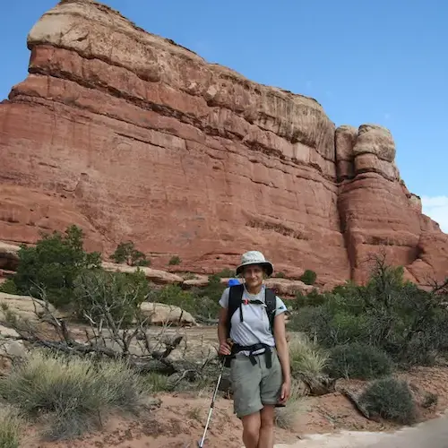
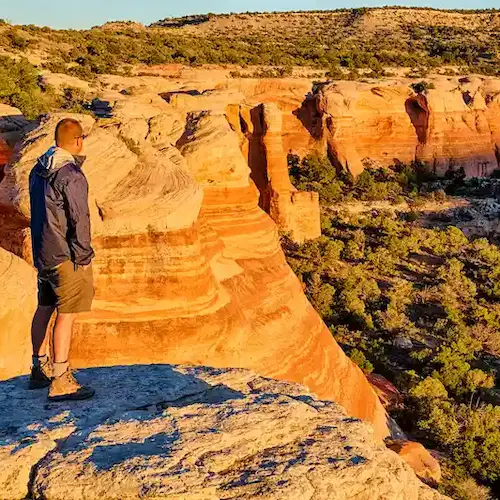
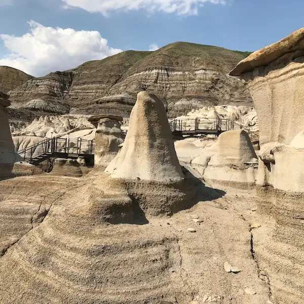
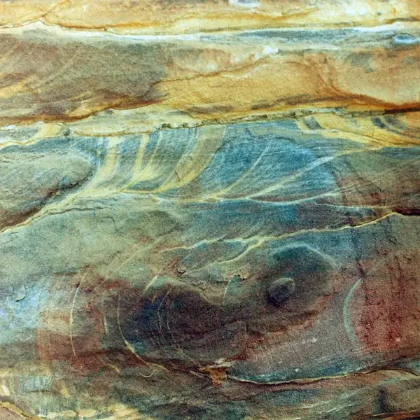

Find your Freedom in the stunning heights while hiking Horsethief Canyon
Backpacking in Alberta's Badlands

Experience the Outdoors in a New Way
Backpacking in Alberta's badlands is definitely a worthwhile experience. The kaleidoscope of sun-drenched desert scenery that you see from the top of a ridge is jaw-dropping, and exploring this canyon on foot is the best way to see it! Hoodoos are the least of the fun things you may see in the many turns and twists of this unique landscape. Poke your head in a sandstone cave or get a picture in a brilliant red dry wash. Hiking here is unparalleled. Horsethief Canyon offers a unique combination of colorful rocks and landscapes, fascinating critters, and local history that is hard to find anywhere else in Alberta. Keep your eyes peeled for wildlife sightings and take photos to remember your trip. Just remember to steer clear of rattlers! Dangerous creatures like rattlesnakes are rare, but taking caution always pays off. Whether you're an experienced backpacker looking for your next adventure, or a beginner with no proper gear, there are perfect trails for everyone here.
To make the most of your backpacking trip in the canyon, it's important to know what to bring. Make sure you have all the necessary gear, including a sturdy backpack, a good pair of hiking boots, a change of clothes, a Lifestraw or water bottle, and plenty of snacks. Check out MEC Hiking Gear for a good reference and to find any supplies you're missing. Of course, bringing a buddy is not only fun but a great precaution for safety reasons. It's also a good idea to research the area, look at maps, and plan your route. There are many great trails to choose from, ranging from a short afternoon walk to several days of strenuous but rewarding treks. Don't forget to take breaks often and enjoy the sights along the way. At the top of every ridge is a perfect selfie-shot to send home, and if you're into nature the badlands are home to many unique and fascinating plants and animals. Even small children can hike the easier trails, although they'll want to stop to climb every hoodoo and bring armloads of rocks home. With a little planning and preparation, backpacking in Alberta's badlands can be such a fun time!
Hiking or Camping?
When it comes to exploring the Badlands, there are clear differences between hiking and camping. Hiking in the Badlands allows you to traverse the unique rock formations, taking in the stunning views from the trails. You can enjoy the beauty of the area while also getting some exercise. Hiking this area is a perfect opportunity to spend a day trip or a weekend. It's a quick escape and adventure to fit into your busy work schedule. Camping, on the other hand, allows you to fully immerse yourself in the landscape and experience the quiet and solitude of the Badlands at night. With the sound of the wind in the canyon and the calm rustle of dry grass, Horsethief Canyon is as unforgettable at night as it is during the day. You can stargaze, listen to the sounds of the wilderness, and really feel like you're a part of the natural world. In addition,the canyon has some astonishing nooks and corners where you can camp without disturbance. If you want a quiet, interesting campsite you can find it in the unique rock formations of Horsethief. Both hiking and camping in the Badlands offer unique experiences, but it really depends on what type of adventure you're looking for.
Tenting near the Local Wildlife
When camping in Horsethief Canyon, it's important to approach wildlife with caution and respect. Keep a safe distance from any animals you may encounter, and never attempt to feed or touch them. Not only are some animals dangerous, but other, harmless, cute animals may be damaged by the smell of human hands and ostracized from their community. In addition, feeding wildlife can result in domesticated creatures that are dependent on camper's donations and no longer able to survive in their natural habitat. Store food and garbage securely in bear-resistant containers to avoid attracting nocturnal visitors to your campsite. When setting up your tent, choose a location that is at least 100 yards away from any potential food sources for animals. To get the most from your trip, avoid loud generators or electric lights. Always remember to pack out all your trash and leave the campsite cleaner than you found it. Both the local critters and following campers will be grateful. By following these guidelines, you can enjoy a safe and responsible camping experience in the canyon, coexisting peacefully with the surroundings.

Explore the most stunning hikes in Alberta
You will always have a great time hiking in Horsethief Canyon! The views, winter or summer, are absolutely stunning and being up high will make you feel so alive and free. Although the longer hikes can be a challenge, it is totally worth it and I would highly recommend this hike to anyone looking for an adventure. Getting to the top of a rise after a climb is so thrilling, the view is worth the effort. Being surrounded by the great outdoors and forgetting about the stresses of everyday life is peaceful and rejuvenating. If you're looking for a way to escape the city and find some freedom, Horsethief Canyon is a must-see! Interested in exploring other great hikes in the area? check out Lundbreck Falls for some more variety and even the chance to find fossils!
“I spent three days camping in Horsethief, it was such a great change from Jasper, where we usually camp! There were no mosquitos; no roots that make it impossible to hammer a tent peg in, and no loud neighbors running generators late into the night! The ground was flat and soft, and the stars were so incredible! We're going there again next year.”
- Kirsten
“There's nothing quite like the landscape at Horsethief, with all the stripes of sediment layers running through the landscape. It doesn't feel like Alberta at all!”
- Robert J.
“The kids loved this hike! We researched beforehand and found some of the easier trails, so we could try them out for an afternoon hike. They turned out a little longer than expected but weren't too hard for our youngest, who is 8. All three kids went crazy climbing on the strange rock formations. It's a great place for a family outing. Makes for some really great photos for a memory album.”
- Jaelin T.
“This canyon is a really good trip. I headed out with a group of friends and it was the highlight of our summer.”
- Anonymous
“I would recommend taking a map for this trip. My wife and I haven't tried all the trails, but the ones we did try were so fun. We've found that backpacking trips are a great date idea if we have a whole weekend to spend. Horsethief is a beautiful hike, the weather seems to be nice almost all the time, but it's easy to get lost without directions.”
- Tristan G.

What's New & Exciting!
Alberta Badlands named 'most enchanting region' of Canada by U.S. travel guide - review
This article brings to light the true beauty of Alberta badlands. The unique strata formations and rare wildlife in this region are truly a crowning glory of Alberta and a reason that even those outside of Canada will come visit our province. These lands are a step into prehistoric times, with fossils and strata revealing the history of our land in a new way. The article suggests that not only do we see flocks of Canadians making the trek to Horsethief Canyon and similar spots yearly, but soon we should expect much more international attention as well. These treasures of nature are something Albertans should be proud of.

A travel company recently put the Alberta Badlands as 17 on the list of top 50 places to travel Worldwide! If you're a local Alberta resident and haven't yet seen this natural wonder in your own province, it's time! Home to not only fascinating wind-carved hoodoos, Alberta badlands are also a site of many dinosaur fossils, even some which belong to entirely new species! These unique fossils make the badlands a treasure trove for geologists, rock enthusiasts, and nature lovers. The fascinating rocks and strata lend a beautiful and unique look to these canyons. Stepping from the ordinary, pine forests which cloak most of Canada, into this country is very special. It's a whole separate biome, which sometimes even feels like a whole separate planet.
The news article refers to the badlands, calling it Canada's “wild west.”
"The badland area is the epitome of Canada's 'wild west' and is perfect for hikers, photographers and dinosaur enthusiasts alike,"
Not only dinosaur fossils can be found here, but remnants of ancient civilizations as well. In this dry and arid land, the wind exposes sections of the earth's history that we might otherwise never have uncovered. To view the full article and see just how Alberta is coming into the light as a tourist destination, please
Cookie Notice: We use cookies to offer you a better browsing experience, analyze site traffic, personalize content, and gather information to improve your experience. Read about how we use cookies and how you can control them by clicking here.